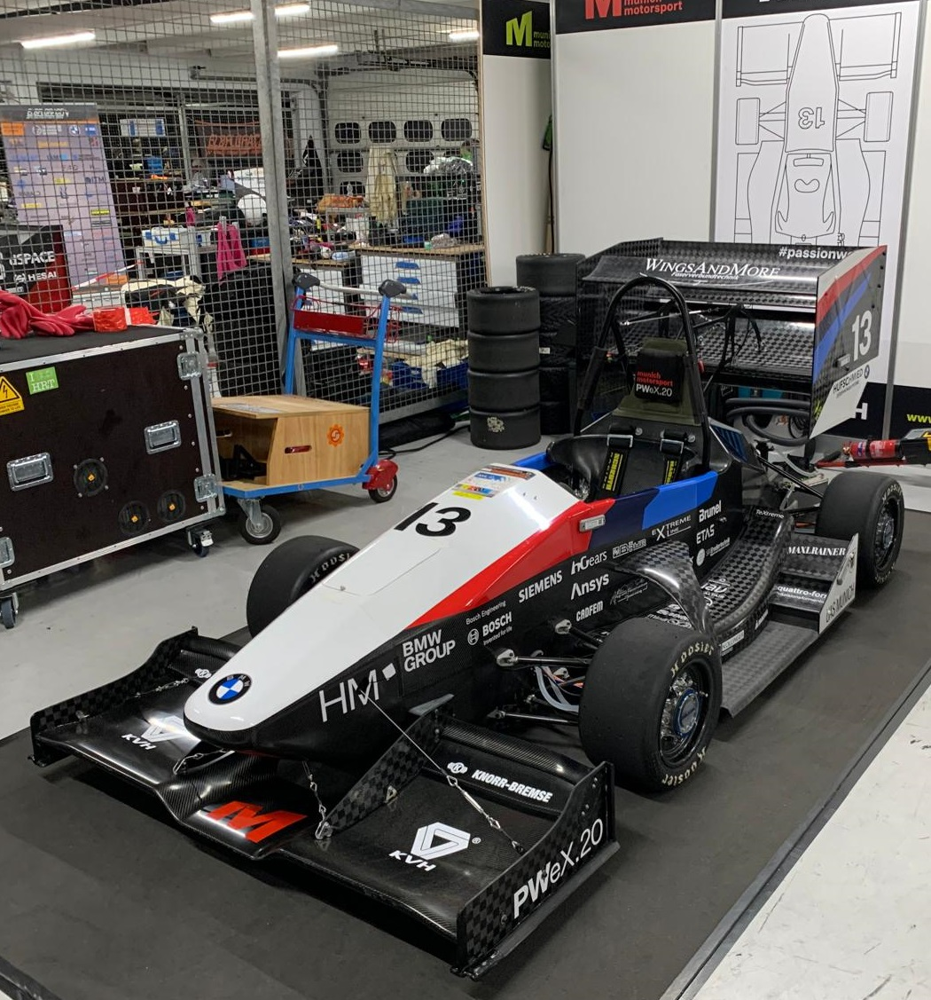
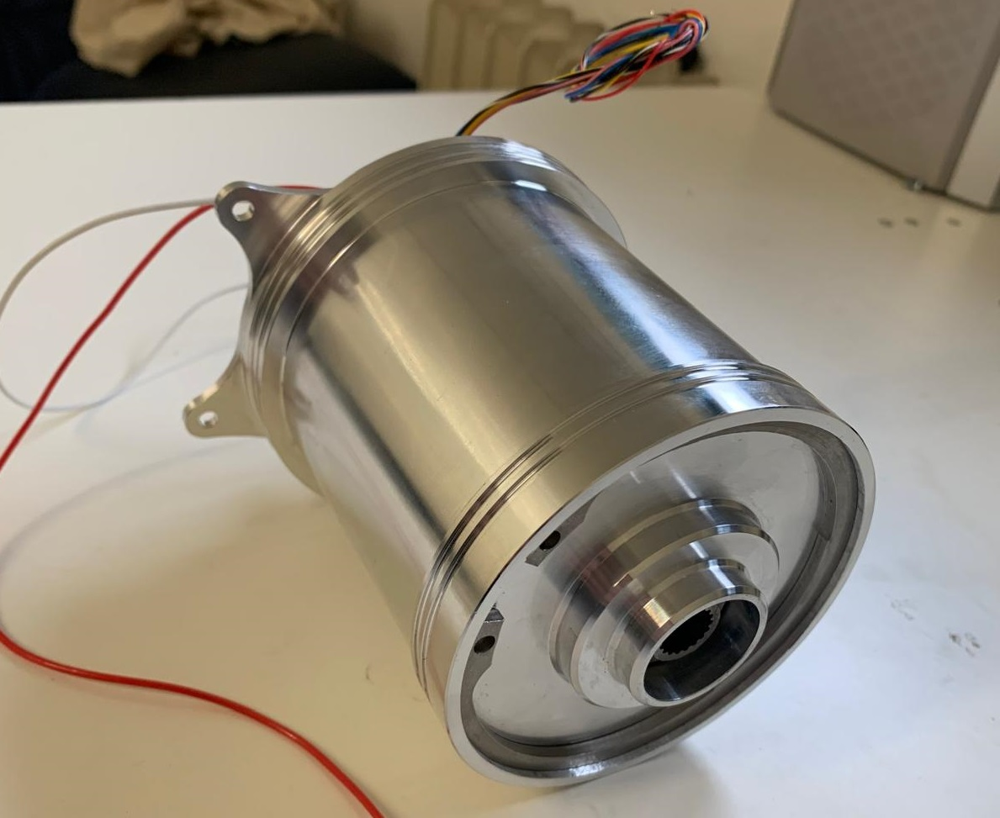
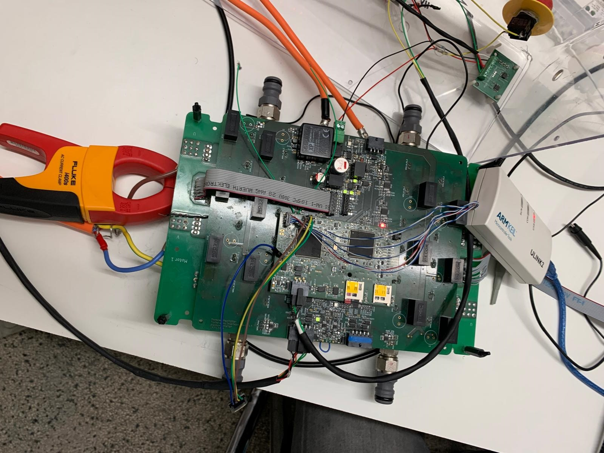
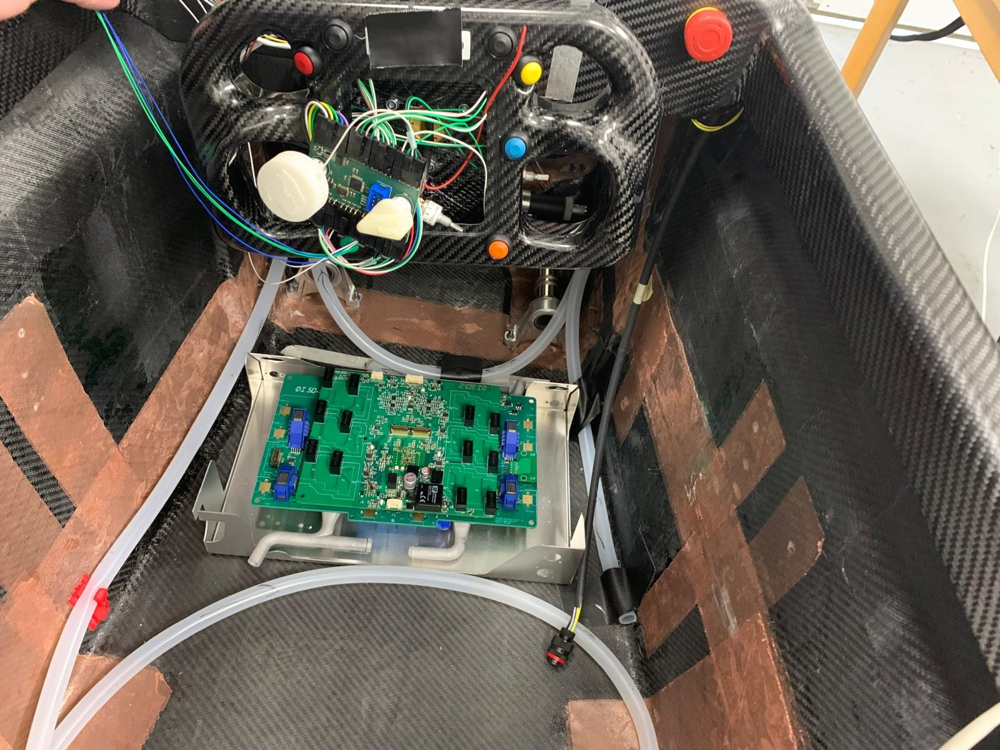
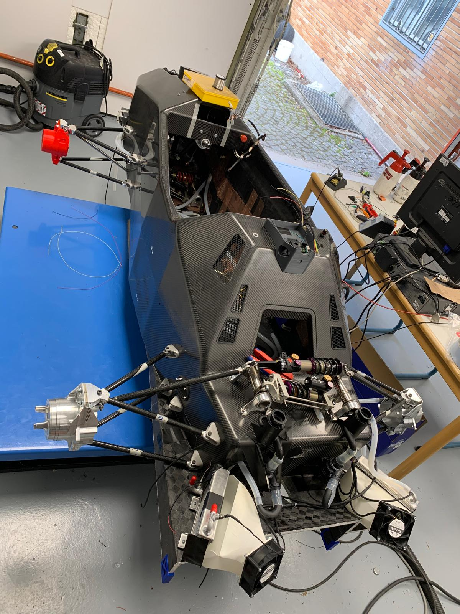
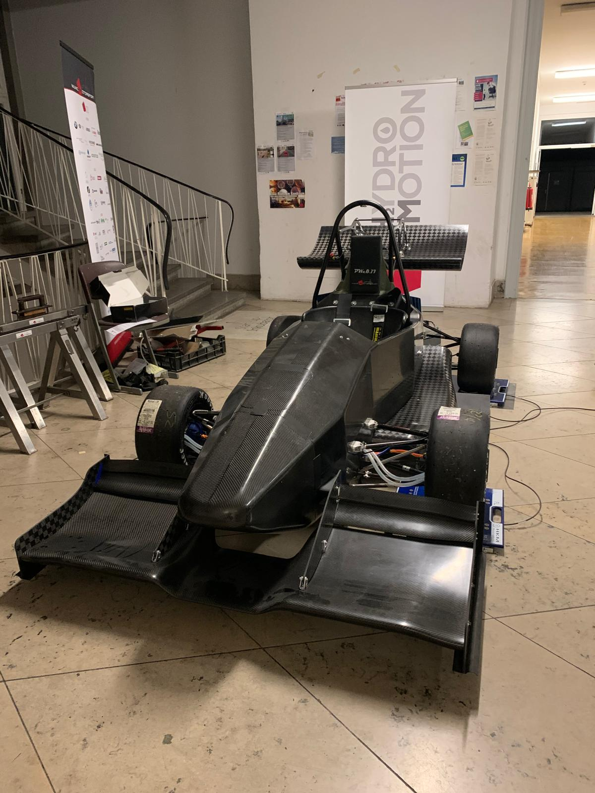

Four years on an electric race car — from laying carbon fibre for a battery container to designing the motor, writing the field-oriented control that ran it, and eventually running the whole team. A competition date does not move, and the car either runs or it does not.

I joined in the battery department, building the high-voltage container out of carbon fibre — including making the mould it was laid up in. Alongside it I helped develop and integrate the dashboard for the HV charging system.
It is a good place to start. A high-voltage pack on a student car is the subsystem where a mistake is not recoverable, and the scrutineering rules are unforgiving. You learn quickly that a design is not finished when it works — it is finished when someone else can inspect it and agree that it is safe.
Leading a team of seven, responsible for the drivetrain and for coordinating the power electronics development effort alongside it.
I designed the mechanical side of a high-power electric motor: 20,000 rpm, 29 Nm peak. At those speeds the mechanical problems stop being separable from the electromagnetic ones — rotor stresses, bearing selection, thermal paths, and balancing all constrain what the electrical design is allowed to want.
Before that, a test bench for electric motors — because a motor you cannot measure is a motor you cannot improve. This turned out to be the piece of infrastructure the next two years of work depended on, which is a lesson I have applied since.

Technical director while continuing to lead the powertrain department. Seven subteams reporting in — suspension, chassis, battery, powertrain, low voltage, aerodynamics — plus budget, sponsorship, and the university relationship.
I did not stop building. Through this period I worked on the power electronics development and testing, wrote field-oriented motor control, and ran motor characterisation — flux mapping and field-weakening control, measured on the bench and then validated in the car.
This is the work that connects most directly to what I do now. A current loop that has to close reliably at high rate, on hardware that will destroy itself if the control is wrong, is the same discipline as a 1 kHz torque loop on a robot arm — one layer further down.


I stayed technical director through the pandemic, when the workshop access, the testing schedule, and the competition calendar all became uncertain. Write here what you actually decided and what it cost — a specific call, not a summary.


I stepped down as technical director and went back to the motor control — continuing development and testing, and integrating the power electronics. Handing over the organisation and staying on the technical problem was the right trade, and it is roughly the shape of what I want now.